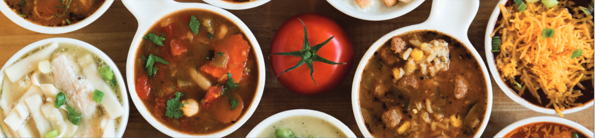
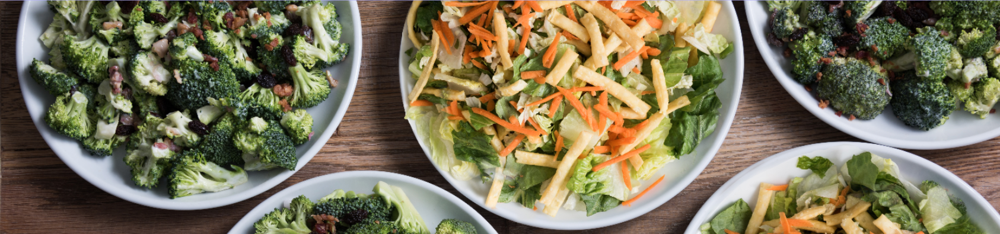
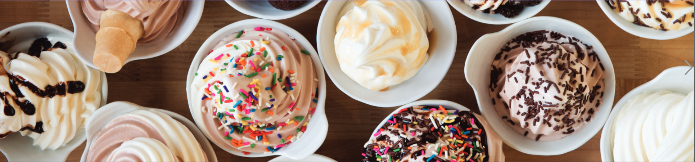

Home
Locations
Sweet Tomatoes
Menu
Souplantation is a United States-based chain of all-you-can-eat buffet-style restaurants. The first Souplantation opened in 1978 in San Diego, California, where the company is headquartered.
Soups

- Chicken Noodle - Noodle and chicken broth $1200
- French Onion - Onions from france with salty water $4000
- Creamy Tomato - Made from tomatoes that were cream $3000
Salads

- Broccoli Salad - Made with Broccoli $1200
- Cheese Salad - Made with Cheese $4000
- Caesar Salad - Made from King Julius Caesar $30,000
Desserts

- Ice Cream - Creamy ice $1200
- Pastries - Sweet bread $4000
- Jello - The feeling you get when you want something someone else has $3000